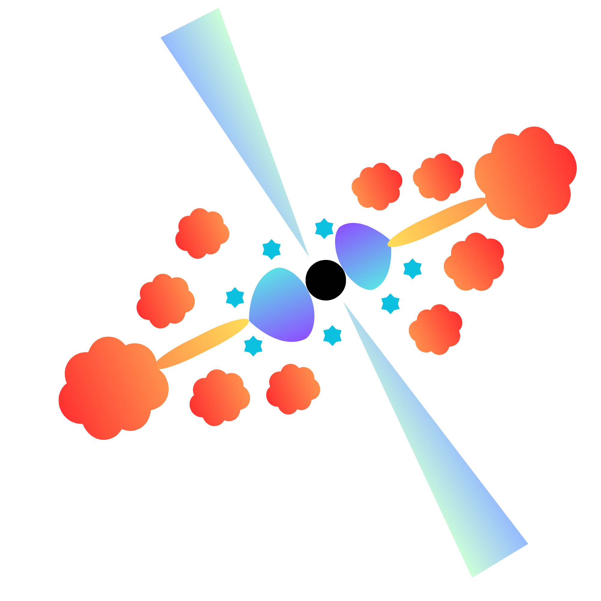
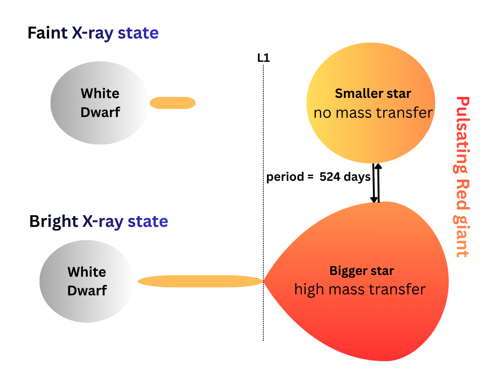

My research focuses on how matter accretes onto compact objects across a wide range of astrophysical environments. I study systems spanning from stellar-mass compact objects in X-ray binaries to supermassive black holes powering active galactic nuclei (AGN) and tidal disruption events (TDEs). Using X-ray and multiwavelength observations, I investigate the physics of accretion and the evolution of compact-object populations in nearby and distant galaxies.

Multiwavelength study of transient accretion events onto supermassive black holes, including changing-look AGNs and TDEs, using eROSITA, XMM-Newton, and optical spectroscopy.
Read more..
Identification and characterisation of X-ray binary populations in the Magellanic Clouds and Magellanic Bridge using eROSITA all-sky survey data and multiwavelength counterpart classification.
Read more..Writing codes/software is the bread and butter of my research, which is heavily observation based. Most of the codes that I write involve analysis of data, catalogs, images, calibration etc.
Read more..Full list on NASA/ADS.